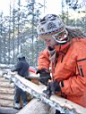
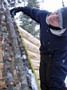
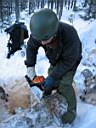
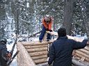
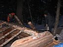
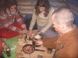

НАША МАША
Когда же это кончится ?...
[ 1 ] - [ 2 ] - [ 3 ] - [ 4 ]
27-28.10.2007
Да, все в России делается через... Короче, зима подкралась как всегда неожиданно :) Еще в прошлые выходные на мамайской дороге были лужи и грязь, а в эти выходные мы толкаем грузовик по колено в снегу! Очень удачно выбрали время для завозки-заброски печки, трубы, двери и фанеры. Хотя мы время уже не выбираем, не из чего выбирать. В эти выходные планировался заключительный этап крышестроения.
Однако, в субботу где-то к обеду не доехали до ручья, потом до самого вечера тащили все вышеперечисленное добро. Особенно в деле "потаскунства" отличились Костя и Андрей, которые весь день таскали тяжеленную чугунную печку и в итоге "они ее заговнили" (с) СоусПарк :) Остальные "носильники" : Артем волоком тащил трубу; Марина несла все те железки, которые отстегивались от печки; Леха нёс утеплитель и дверь ("Я ее породил, я ее и понесу!"), ну а я нёс пол-листа фанеры, которому предписано быть обеденным столом...
Снега в районе экстрим-городка уже по пояс, и уже много людей приехало открывать сезон по свежему пухлячку. Ну а мы по пояс в снегу откапываем топоры и таскаем бревнышки для крыши. Пообедали в пять вечера, потом как-то быстро стало темнеть. Блин, зима! Холодно, а ведь всего -6 на градуснике. Начали делать заднюю стенку крыши. Потом пошли в старую зимуху ужинать, пить водку и ночевать.
На следующий день делали все ту же заднюю стенку крыши. Лёха вставил дверь, Артем и Марина помогали на подхвате, Костя и Андрей ушли за вторым листом фанеры.
Аааа, когда же мы построим эту нашу зимуху ?!?!?! (крик души :)
2.11.2007
Пятница. Мне и Лёхе "посчастливилось" найти свободное время и сбегать на Мамай. Занесли для печки верхнее кольцо и крышку, и еще дотащили целый лист фанеры, который в прошлый раз не донесли. Еще одна полоска фанеры так и лежит в снегу, на потом осталась. По приходу в зимуху решили в ней и пообедать. А че, там уже уютненько :) Заодно решили произвести пробный запуск печки. На улице. Разгорелась на ура, даже почти не дымила. "Поздравляю, коллега! Испытания прошли успешно!"
А народ уже заходит, подтягивается к кунгу, тропит на Лесной. Ожидание большого праздника :)
"Ифан, мы хотим домой!". Скромно сваливаем, объясняя встречному народу, что водка кончилась и мы пошли в магазин :) А на самом деле Лёхе надо было завтра ехать на Малое за моциком, а мне надо было собирать большой рюкзак и встречать своих друзей в Слюдянке.
3.11.2007
Кто не смог поехать, тот и не приехал, а кто приехал? Все свои - Марина, Андрей, Ульяна. Артем Немо местный, утром будет в электричке. Ситуэйшн на сегодня нам выдался сложный - вроде бы едем на Мамай открывать сезон, и вроде бы там жить-то и не где :) Крыши у зимухи нихт! Так что нам сегодня надо срочно строить крышу, делать спальные места и ставить печку. А то замерзнем нафик. Хотя всего -3, но с непривычки всяко может быть... Артем мучается, он вчера на вокзале с друзьями всю ночь пил волшебный спрайт :)
Мы строили, строили, и наконец построили. Временное решение - крыша на каркасе из жердей, из тента и баннера, нары размером 2м Х 2.4м, и печко топицо :) Обедали у костра, а ужинали уже в зимухе. А ведь доделывали все уже по темноте. И девченки грозились сбежать к землякам ангарчанам. И меня обзывали диктатором-фанатиком. Но мы же успели! Вот сидим, подкрепляемся и ждем, когда же прогреется наш домик.
Артем Сушко (Артемио) присоединился к нашей компании. Гости зашли - Костя Шишкин с гитарой, Ксюша Шу и Сигал. Вроде новоселье отмечаем или это так, репетиция? Что-то мне кажется, что это была репетиция, очень уж скромно мы посидели :) Надо бы как следует новоселье отметить!
Мы потом еще сами пошли по гостям, но что-то поздно пошли, все веселье уже затихало, а местами и вовсе уснуло. Особенно понравился салют, "пингвины" отличились, молодцы! Завтра будем открывать катальный сезон ...






В строительных работах пока перерыв. Ага, надо покататься. Крышу потом переделаем. Да и внутри обстановку надо переделать...
[ 1 ] - [ 2 ] - [ 3 ] - [ 4 ]
Октябрь-ноябрь 2007
буквы . Алексей .
фоты . Марина . Ульяна . Андрей .